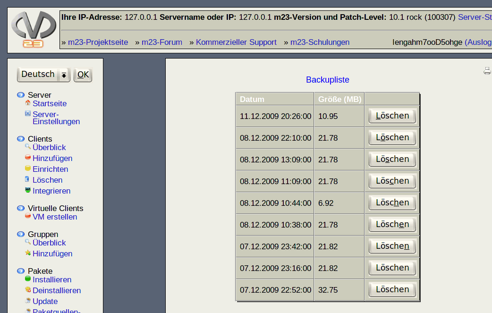

Hier sehen Sie die Liste der Backups dieses m23-Servers, die aktuell auf diesem Server gespeichert sind. Neben dem Platzbedarf sehen Sie, wann die Sicherung vorgenommen wurde.

Möchten Sie eine Sicherung löschen, so klicken Sie in der betreffenden Zeile auf ''Löschen''.
Unterabschnitte
root
2017-06-13